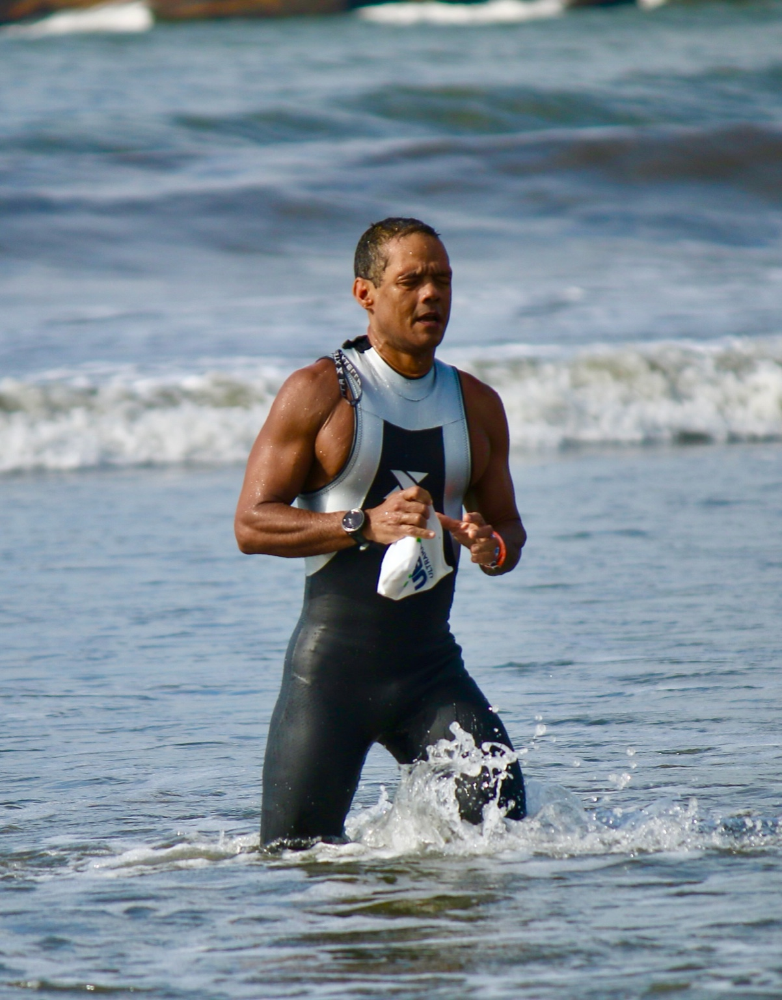
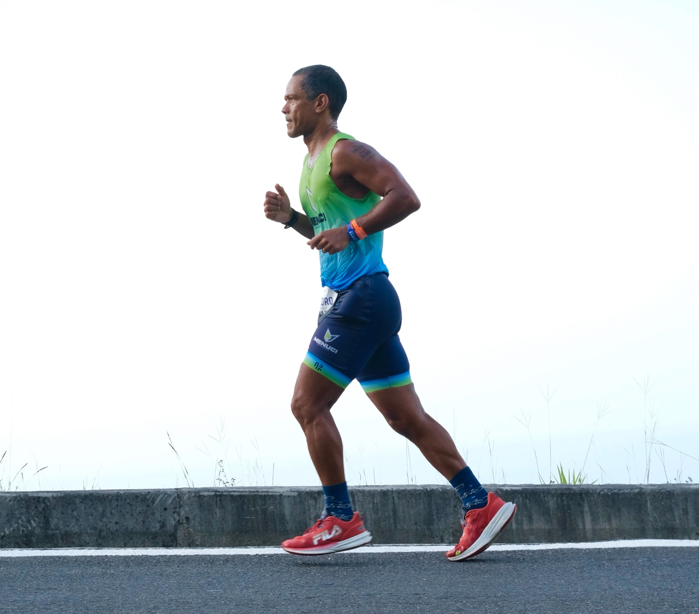
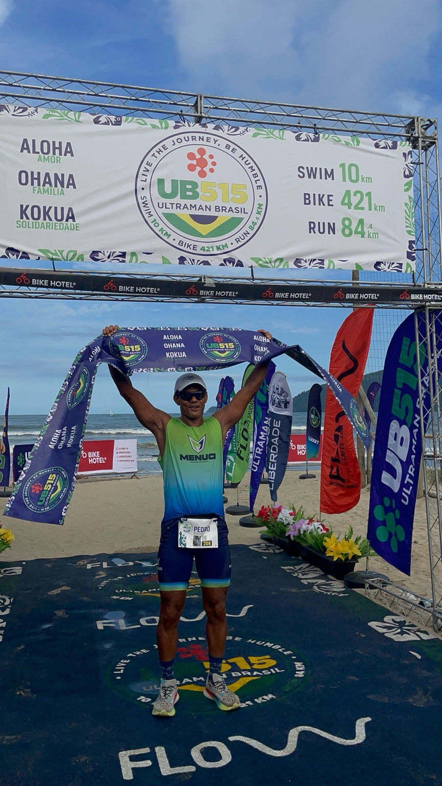

Propósito e Impacto Social
Inspirar pessoas com mais de 50 anos a se reinventarem com saúde e disciplina. Promover o esporte como ferramenta de transformação e saúde pública. Representar a Amazônia com orgulho e autenticidade.

Uma jornada de dedicação, propósito e inspiração — após os 50 anos.
Professor titular da UFPA, geólogo, triatleta amador de alta performance e comunicador digital. Reinventou-se após os 50 anos e inspira milhares de pessoas com sua história de longevidade, disciplina e propósito.
Participar de uma das provas mais difíceis do mundo: 517,5 km em 3 dias. Dia 1: 10 km natação + 145 km ciclismo. Dia 2: 276 km ciclismo. Dia 3: 84 km corrida. O objetivo é representar o Brasil e a Amazônia, buscando vaga para o Mundial no Havaí.
Inspirar pessoas com mais de 50 anos a se reinventarem com saúde e disciplina. Promover o esporte como ferramenta de transformação e saúde pública. Representar a Amazônia com orgulho e autenticidade.
Adultos 30+, atletas amadores, profissionais e aposentados. Pessoas em transição de vida. Mais de 50 mil pessoas impactadas até fevereiro de 2026, por meio de redes sociais, eventos e mídia espontânea.
Instagram (@pedro_walfir), LinkedIn (/in/pedrowalfir), YouTube e eventos presenciais.
Patrocínio Master, Apoio Institucional e Comunitário. Inserção da marca em uniformes, vídeos, redes, banners e eventos. Participação em palestras, workshops e relatórios de impacto.
Investimento estimado total: R$ 60.000 a R$ 80.000 para: preparação esportiva e logística, produção de conteúdo, ações sociais e educativas.
Leve sua marca até o Ultraman Florida 2026!
Contato: pedrowalfir@icloud.com
Instagram: @pedro_walfir
LinkedIn: /in/pedrowalfir